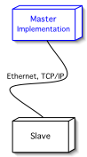
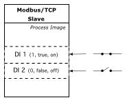

TCP Master HOW-TO |  |
- About
- What is a Master?
- What is a Discrete Input?
- Classes of Interest for the Developer
- Implementation
About | ||
This document is a tutorial for writing Modbus/TCP Master applications utilizing
the jamod library. It explains the basics and walk's you through
a simple command line Master implementation, that will allow you to read that will
allow you to read the state of one or more discrete input's from a slave on the network.
If you are new to Modbus, it is highly recommended to first take a look at
Understanding the Protocol
(especially the section about the TCP implementation) as well as the
actual protocol specifications.
What is a Master? | ||
Thinking in terms of the Client-Server network computing paradigm, the Master
application is a client. It establishes a connection with
the slave (i.e. the server) and uses this connection for sending
a Request to the slave, from which a Response will be received.
As described in Understanding the Protocol,
each cycle of Request and Response is called a Transaction.
Figure 1 shows a simple graphical representation of such a cycle:
|
|
The master can pull or poll (repeatedly) data from a source (data acquisition),
as well as control a device. In the latter case it is often recommended to understand
the mode of operation of the slave device. Industrial remote I/O's for example
might have a mechanism (i.e. a watchdog) to ensure predictable behavior when the
communication with the master is lost. Thus ensure to study the documentation
of the particular device you are working with.
The simplenetwork setup for this tutorial is composed of two nodes,
as depicted in Figure 2.
|

|
What is a Discrete Input? | ||
According to the Modbus data model, which is part of the protocol specification (see section 4.3) a Discrete Input is a single bit (i.e. 0 or 1, false or true), read-only "data item", which is usually provided by an I/O system. Figure 3 shows an example with simple switches that are mapped into the slave's process image in form of discrete inputs. The example master application will be capable of obtaining the state of these DI's from the slave.
|

|
Classes of Interest for the Developer | ||
The motivation for creating jamod was to achieve an intuitive and object oriented implementation of the protocol, in a way, that there is a natural mapping from the domain knowledge (i.e. Modbus protocol) to the abstract class model. The important elements in the description above (What is a Master?) have been highlighted and the following list represents the mapping between them and the classes from jamod that will be needed for a master implementation:
- Connection: TCPMasterConnection
- Transaction: ModbusTCPTransaction
- Request: ModbusRequest (respectively it's direct known subclass ReadInputDiscretesRequest)
- Response: ModbusResponse (respectively it's direct known subclass ReadInputDiscretesResponse)
Implementation | ||
As the idea is to provide a tutorial in form of a very simple command line example, it will consist of only one class and most of the work will be done in the entry method (public static void main(String args[])). This is probably not the way jamod will be usually employed in OO designs, but we hope it serves the demonstrative purpose.
Before we start with coding, let's take a look at the simplified interaction diagram of the application, given as Figure 4. The part most interesting for this tutorial is colored blue, but note that the diagram also contains a little bit of the things that happen behind the scenes (i.e. within the Transport, with writeRequest() and readRequest()), which are there to give a more complete picture.
 |
Now let's start writing code. We need a simple Java application skeleton, with imports of all jamod packages:
import java.net.*;
import java.io.*;
import net.wimpi.modbus.*;
import net.wimpi.modbus.msg.*;
import net.wimpi.modbus.io.*;
import net.wimpi.modbus.net.*;
import net.wimpi.modbus.util.*;
public class DITest {
public static void main(String[] args) {
try {
...
...
} catch (Exception ex) {
ex.printStackTrace();
}
}//main
}//class DITest
Next we add the instances and variables the application will need:
/* The important instances of the classes mentioned before */ TCPMasterConnection con = null; //the connection ModbusTCPTransaction trans = null; //the transaction ReadInputDiscretesRequest req = null; //the request ReadInputDiscretesResponse res = null; //the response /* Variables for storing the parameters */ InetAddress addr = null; //the slave's address int port = Modbus.DEFAULT_PORT; int ref = 0; //the reference; offset where to start reading from int count = 0; //the number of DI's to read int repeat = 1; //a loop for repeating the transaction
Next the application needs to read in the parameters:
-
<address [String]> as InetAddress into addr
optionally the port might be added to the address as :<port>, and read into port. - <register [int16]> as int into ref
- <bitcount [int16]> as int into count
- {<repeat [int]>} as int into repeat, 1 by default (optional)
//1. Setup the parameters
if (args.length < 3) {
System.exit(1);
} else {
try {
String astr = args[0];
int idx = astr.indexOf(':');
if(idx > 0) {
port = Integer.parseInt(astr.substring(idx+1));
astr = astr.substring(0,idx);
}
addr = InetAddress.getByName(astr);
ref = Integer.decode(args[1]).intValue();
count = Integer.decode(args[2]).intValue();
if (args.length == 4) {
repeat = Integer.parseInt(args[3]);
}
} catch (Exception ex) {
ex.printStackTrace();
System.exit(1);
}
}
These will be used subsequently to setup and open the connection as well as prepare a request and a transaction:
//2. Open the connection con = new TCPMasterConnection(addr); con.setPort(port); con.connect(); //3. Prepare the request req = new ReadInputDiscretesRequest(ref, count); //4. Prepare the transaction trans = new ModbusTCPTransaction(con); trans.setRequest(req);
No we are ready for action. The last part is executing the prepared transaction the given (repeat) number of times and then for cleanup, close the connection:
//5. Execute the transaction repeat times
int k = 0;
do {
trans.execute();
res = (ReadInputDiscretesResponse) trans.getResponse();
System.out.println("Digital Inputs Status=" + res.getDiscretes().toString());
k++;
} while (k < repeat);
//6. Close the connection
con.close();
That's all. Pretty simple no?.
The following is an example output with (debug enabled) of the application run against a test slave:
Fangorn:~/development/java/jamod wimpi$ java -Dnet.wimpi.modbus.debug=true \ -cp build/classes net.wimpi.modbus.cmd.DITest localhost:5555 0 4 3 Connected to localhost/127.0.0.1:5555 Request: 00 00 00 00 00 06 00 02 00 00 00 04 Response: 00 00 00 00 00 04 00 02 01 50 Digital Inputs Status=00001010 Response: 00 01 00 00 00 04 00 02 01 50 Digital Inputs Status=00001010 Response: 00 02 00 00 00 04 00 02 01 50 Digital Inputs Status=00001010
by Dieter Wimberger